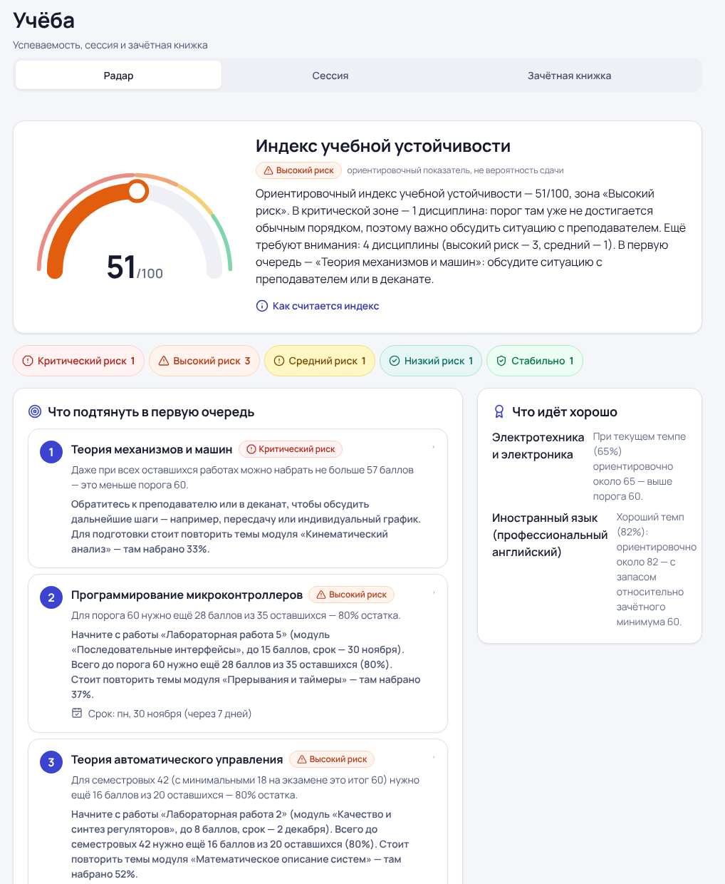

06 · От идеи до кабинета
8 шагов за двое суток
1
до 21.11 · автор
Идея и ТЗ
4 промпта в ChatGPT: ТЗ, 8 ролей, стартовый промпт.
2
21.11 · 21:50
Контракты с эталоном
План 14 дисциплин / 63 темы, формулы, демо-баллы с ручным ответом.
3
22:00–22:30
Агенты параллельно
Аналитика, материалы, продукт, backend: сессии, API, 24 таблицы.
4
22.11 · 03:00
Интерфейс и Docker
15 страниц, e2e-обход, образ 300 МБ.
5
13:20
Независимый QA
50 API-атак + 277 браузерных проверок → 12 дефектов → исправлены.
6
15:50–17:30 · автор
Ручной тест → 4 итерации UX
Меньше текста, «назад», шкала, права деканата.
7
19:50 · автор
Публикация на VPS
Docker + Caddy с HTTPS; найден баг Safari — исправлен.
8
22.11
Документация
Промпты, журнал из 15 этапов, отчёт, инструкция жюри.
Первая версия «Учёбы»

Информативно, но перегружено: абзацы объяснений, «Что подтянуть» и «Что идёт хорошо».
После правок автора

Число и зона, подсказка ИИ по кнопке, «Что это такое?», предметы по типу аттестации, у каждого — шкала.
Цифровой деканат будущего · Сироткин Игорь, Bauman Analytics7